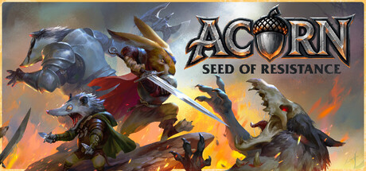
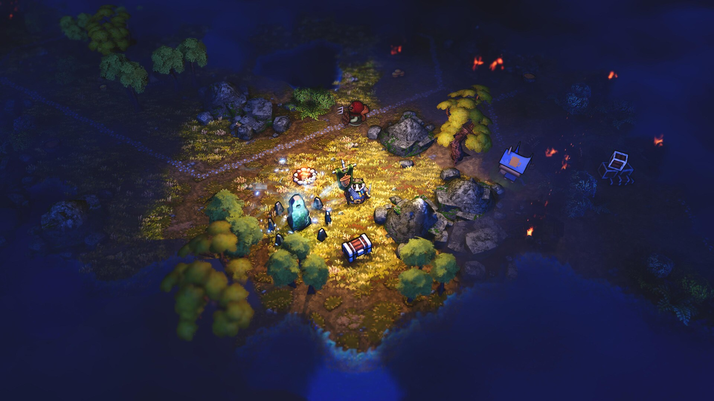
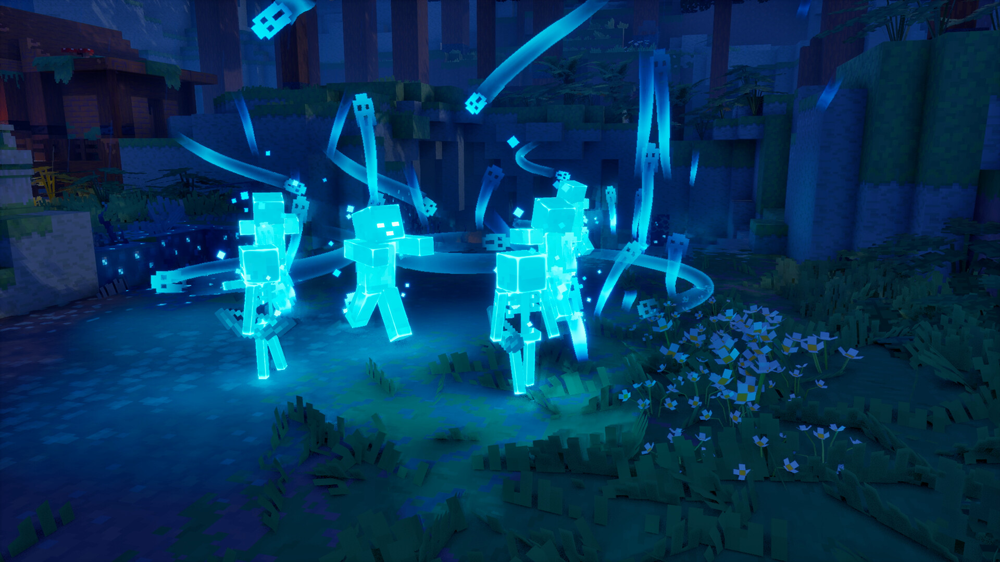

今日无新旗舰（new_flagship=false）。昨 PDT DevDay（RSS Sol 条≈18:00 CST，昨截稿后漏报补入）主发两条：GPT-6.1 Sol（成本档升级，不当一般旗舰；现役一般文本仍 GPT-6 Astra）+ OpenAI Dots（Astra 驱动 always-on 个人 Agent）。今日无新 MCP/Skill 推荐（Dots 不冒充推荐）。
- 独立 Signal
- 2
- 新旗舰
- 无
- MCP / Skill 推荐
- 无
- 最高火苗
- 🔥🔥（2）
- GPT-6.1 Sol（fire2）：API
gpt-6.1-sol，价 $2/$10；厂商自报近 Astra @约 1/5 价；附「与主流模型对比」表。
- OpenAI Dots（fire2）：Astra 驱动 always-on 个人 Agent；Pro/Business Premium 等滚动开放——Agent 产品条，非 MCP/Skill 推荐。
- 不复述昨 Sonnet 5.5 / AMD×World Labs；Haiku 5.5 仍 coming weeks。
Pending：Haiku 5.5；Qwen4；Grok 4.8；DeepSeek-V4.1-Pro；Sol Ultrafast；Muse Charm；Kimi K3.1。Claude Fable ≠ 游戏《神鬼寓言》。
🧠 模型发布

OpenAI 于 DevDay（Sep 29，RSS 10:00 GMT≈18:00 CST，昨截稿后漏报补入）推出 GPT-6.1 Sol：GPT-6 Sol 的重大升级，厂商自报在 agentic coding / computer use / 专业工作上接近 GPT-6 Astra，标准输入/输出 token 价约为 Astra 的五分之一（$2/$10 vs Astra $10/$50）；cached input $0.10/MTok。属 Sol 成本/专用档，**不当一般文本旗舰**（`new_flagship=false`）；一般文本现役仍 GPT-6 Astra。
- 产品/事项
- GPT-6.1 Sol（Sol 成本档模型 GA；非一般文本旗舰）
- 落款
- openai.com/index/introducing-gpt-6-1-sol；DevDay Recap；developers.openai.com 模型卡；RSS Tue 29 Sep 2026 10:00:00 GMT
- API / 规格
- slug=gpt-6.1-sol；context 1,050,000；max input 922k；max out 128k；reasoning effort low/medium/high/xhigh/max（无 none/minimal）；知识截止 Apr 30, 2026；modalities text+image → text
- 定价（官方）
- Input $2 / Cached input $0.10 / Cache writes $2.50 / Output $10 per MTok（模型卡）；Astra 对照 $10/$1/$12.5/$50；厂商称标准 in/out 约为 Astra 的 1/5
- 可用性
- Plus/Pro/Business/Enterprise/Edu：ChatGPT Work 与 Codex；API gpt-6.1-sol；官方称尚未进 Chat；Ultrafast 档「coming days」最高约 8× 生成速度（Codex）
- 时点
- DevDay Sep 29；昨扫 ~09:50 CST 前未收录 → 本窗漏报补入
- 是否新旗舰
- 否（Sol 成本/专用档；一般文本旗舰仍 GPT-6 Astra）
- 是否推荐条
- 否（非 MCP/Skill 工作流包；new_mcp_skill_rec=false）
- 定位：厂商称「Near-Astra intelligence for a fifth of the price」；面向复杂日常/agentic coding、computer use、专业工作的成本档，与 Astra 互补而非取代。
- 厂商自报评测口径（公告叙述，缺绝对分处写未核）：DeepSWE v1.1 匹配 Astra、较 GPT-6 Sol 最佳分高 6.4pp（更低 effort/成本）；GDP.pdf 高于 Opus 5.5（含 fallbacks）且接近 Astra、成本约 1/5；AutomationBench medium 高 Opus 5.5 2.2pp、较 Sol 同设置 +4.8pp；OSWorld 2.0 offline（partial）max effort 较 Sol +7pp、距 Astra 约 2.1pp、成本约 1/7；Terminal-Bench Science 0.1 max effort 成本约 $5.47/任务 vs Opus 5.5 $23.21 / Astra $23.80，Astra 仍最高分 68.1%。
- 事实性：低 effort 下含事实错误回答占比 11.4%→7.7%（约降 32%）；各 effort 与 Astra 差距 ≤1.9pp（厂商自报；难题集非典型流量）。
- 安全/对齐：厂商称对齐评测较 Sol 接近 Astra；TC 引二线称未发 GPT-6.1 Astra——**传闻不进正文落款**。
- 对比表数字均来自 OpenAI 公告/模型卡，标厂商自报；一线第三方复测未核处写「未核」。
与主流模型对比
| 指标 |
GPT-6.1 Sol |
GPT-6 Sol |
GPT-6 Astra |
Claude Opus 5.5 |
|---|
| Input $/1M（官方） |
$2 |
未核本条（前代同档口径） |
$10 |
未核本条 |
| Output $/1M（官方） |
$10 |
未核本条 |
$50 |
未核本条 |
| Cached input $/1M |
$0.10（较前代 Sol cache 自称低 50%） |
未核绝对值 |
$1 |
未核本条 |
| Context / max out |
1.05M / 128k |
未核本条 |
未核本条 |
未核本条 |
| DeepSWE v1.1 vs Astra/Sol |
匹配 Astra；较 Sol 最佳 +6.4pp（厂商自报） |
基线 |
对照 |
— |
| AutomationBench（medium） |
较 Opus 5.5 +2.2pp；较 Sol +4.8pp（厂商自报） |
基线 |
未核本条 |
对照基线 |
| OSWorld 2.0 offline partial（max） |
较 Sol +7pp；距 Astra ≈2.1pp（厂商自报） |
基线 |
对照 |
— |
| Terminal-Bench Science 0.1 成本/任务（max） |
≈$5.47 |
未核 |
≈$23.80（分最高 68.1%） |
≈$23.21 |
| 事实错误率（低 effort，难题集） |
7.7% |
11.4% |
差距≤1.9pp（各 effort） |
— |
| 第三方独立复测 |
未核 |
未核 |
未核 |
未核 |
数字来源 openai.com/index/introducing-gpt-6-1-sol 与 developers 模型卡（gpt-6.1-sol / gpt-6-astra）；缺绝对分写未核；对照优先 GPT-6 Sol / GPT-6 Astra / 公告点名 Opus 5.5
关注度 · 🔥🔥。来源：openai.com/index/introducing-gpt-6-1-sol · developers.openai.com/api/docs/models/gpt-6.1-sol · developers.openai.com/api/docs/models/gpt-6-astra · openai.com/index/devday-2026-recap · openai.com/news/rss.xml · techcrunch.com/2026/09/29/openai-launches-gpt-6-1-sol-sa · simonwillison.net/2026/Sep/29/openai-devday-2026-live-bl。
OpenAIGPT-6.1SolDevDaycost-tiernot_general_flagship
🔧 Agent / MCP / Skill
OpenAI 于 DevDay 推出 Dots：由 GPT-6 Astra 驱动的 always-on 个人 Agent，自带云电脑/浏览器，可经插件连接大量应用，并在 ChatGPT / Slack / Teams 等入口协作；开始向 Pro、Business Premium、Enterprise 等合格市场滚动开放。属 Agent 产品主轴高权重条，**不是** MCP/Skill 工作流推荐包（`new_mcp_skill_rec=false`）。
- 产品/事项
- Dots（always-on 个人 Agent；Astra 驱动）
- 落款
- openai.com/index/introducing-dots；DevDay Recap；TC Sep 29
- 能力要点
- 自有云电脑与浏览器；插件生态（官称 4000+ apps）；Slack/Teams；specialist dots 预览；与 Microsoft Agent 365 安全控件合作叙述
- 可用性
- 官称开始在合格市场向 Pro / Business Premium / Enterprise 滚动；Enterprise/Edu/Healthcare 可由 admin 开 beta（默认关）；Simon：Keynote 称 Pro/Enterprise 当日可及
- 时点
- Sep 29 DevDay（RSS 00:00 GMT≈08:00 CST 已在昨窗、昨扫未收；与同日 10:00 GMT Sol 一并按漏报补入）
- 是否新旗舰
- 否
- 是否推荐条
- 否（OpenAI 自有 Agent 产品，非第三方 MCP/Skill 推荐；不标 new_mcp_skill_rec）
- 定位：厂商称「remarkably capable, always-on agents」——持续为目标工作、可后台推进多任务，用户保留审批/权限控制。
- 协作面：引入与 Dot 协作的 ChatGPT Space（DevDay/Simon）；specialist dots 面向组织职责与身份/硬件供给预览。
- 与 MCP/Skill 轴关系：本条记 Agent 产品发布；插件/Marketplace/Codex Security Cloud 等 DevDay 辅线不单开、不冒充 MCP/Skill 推荐。
- 画面：官方 Art Card 已下 media/openai-dots.png。
关注度 · 🔥🔥。来源：openai.com/index/introducing-dots · openai.com/index/devday-2026-recap · techcrunch.com/2026/09/29/openai-launches-dots-its-bubbl · simonwillison.net/2026/Sep/29/openai-devday-2026-live-bl。
OpenAIDotsAgentDevDayAstra
Coffee Stain Big Break Showcase 已播建片单（🔥🔥🔥；ACORN 等世界首发 + Lightyear 1.0 / DRG Survivor 主机 / FLASK 等新锁）+ 独立世界首发簇（🔥🔥）+ 发售次日口碑：空战奇兵8 Steam Mixed≈70%/厂商致歉（🔥🔥）与 Minecraft Dungeons II Steam Mixed≈55%（🔥🔥）；漏报补入怪物猎人 Outlanders 全球手游 10/29；发售翻牌真・三国无双２ Remastered / 新宿异变 / 家有恶邻 F2P 1.0。今日有独立游戏观察新增；exhibition_empty=false。
- 独立 Signal
- 9
- 最高火苗
- 🔥🔥🔥（3）
- 独立轴
- 有新增（Big Break 独立世界首发簇）
- 展会片单
- Coffee Stain Big Break Showcase（已播）
- 新游戏事件
- 16
- Big Break 片单：世界首发 ACORN / Gnomesplosion! 等；新锁 Lightyear 1.0 11/4、DRG Survivor 主机 10/7、FLASK 2027-01-14 等；DLC/季票深潜压表。
- 口碑增量：空战奇兵8 希孚之翼抢先 Mixed≈70% + 致歉；MD2 首日 Mixed≈55%；巫师3 Remastered 首日 MC≈94 / Steam≈92%（fire1）。
- new_games×16：ACORN: Seed of Resistance、Lightyear Frontier、Deep Rock Galactic: Survivor、FLASK、Muri: Wildwoods、家有恶邻（Neighbors: Suburban Warfare） 等。
不复述昨发售翻牌本身与 Minecraft LIVE 长名单。命名：真・三国无双２ with 猛将传 Remastered / 新宿异变 / 家有恶邻 / 怪物猎人 Outlanders。不发涉政。
🎬 展会片单

昨 pending 翻牌：Coffee Stain Big Break Showcase 已于 2026-09-29 10:00 PDT（≈09-30 01:00 CST）在 YouTube 首播（IGN 同播）。官方通稿 + Gematsu + Pixelkin 交叉：40+ 作品/工作室、约 10 个独家。世界首发级含 Ghost Ship×Guidelight《ACORN: Seed of Resistance》（2027 PC）及 Breaking Through 多款新作公布；新锁含 Lightyear Frontier 1.0（11/4）、Deep Rock Galactic: Survivor 主机（10/7 PS5/Switch/Switch 2）、FLASK（2027-01-14）、Muri: Wildwoods（12/7）、Goat Simulator 3「Ticket to Dizzyworld」（11/19）等。已定档深潜（Satisfactory 首个 DLC Core Values 无日、Teardown Rally、DRG 季票路线等）压表。独立世界首发另见独立轴簇。
- 事件
- 展会同期官方秀已播 / 🎬 展会片单
- 档期窗
- 2026-09-29 10:00 PDT ≈ 09-30 01:00 CST（19:00 CEST）
- 规模
- 40+ games & studios；约 10 exclusives（厂商口径）
- 世界首发要点
- ACORN: Seed of Resistance（2027）；Gnomesplosion! / Bad Slime / Dark Offering / Solid Boat Adventure 等 Breaking Through；Satisfactory 首 DLC Core Values（无日）
- 新锁要点
- Lightyear Frontier 1.0 11/4；DRG Survivor 主机 10/7；FLASK 2027-01-14；Muri: Wildwoods 12/7；Goat 3 Dizzyworld 11/19；Wielders of the Essence 11/5
- 一手落款
- Coffee Stain 秀页/通稿 + Gematsu 同日簇 + Swipe Right 全表通稿
- 独立轴
- 展会周例外：独立世界首发簇另开（见 indie 条）
- 时点
- 播完≈09-30 01:00–03:00 CST；本窗入核
- VOD：YouTube Premiere https://www.youtube.com/watch?v=oIJOpx40nfs ；Steam Event 汇总愿望单
- Coffee Stain 线：Satisfactory Core Values（地下远征/新叙事/建筑/生物/群系/猫伴，无日）；Goat 3 Ticket to Dizzyworld 11/19 全平台；Lightyear Frontier 离开 EA→11/4 Steam/Xbox；Neighbors 同日 F2P 1.0；Satisfactory 桌游 Gamefound 10/13 众筹
- Ghost Ship 线：DRG Season 07 年内 / Season 08+Expansion 2027 夏；Rogue Core Update 3 约 10 月末；Survivor→PS5/Switch/Switch 2 锁 10/7 + Knockout Expansion（无日）；FLASK 锁 2027-01-14；Dinolords 多人 Demo 10/19；ACORN 公布 2027
- Breaking Through / 伙伴：Gnomesplosion!、Bad Slime、Dark Offering、Solid Boat Adventure、A Corporate Machine、Begraved 预告、Fourleaf Fields、Fish 'n Ships、Appulse/Dungeon Automata（Raw Fury）等——世界首发进片单，已定档深潜压表
- 不复述 Minecraft LIVE / TGS / PCGS / Capcom Spotlight 长名单
Coffee Stain Big Break Showcase（已播） · 播出 2026-09-30 ~01:00 CST（09-29 10:00 PDT / 19:00 CEST） · VOD
世界首发 / 新揭
| 作品/内容 | 说明 |
|---|
| ACORN: Seed of Resistance | Guidelight × Ghost Ship；roguelike RPG 自动战斗；2027 PC Steam；独立轴头条 |
| Gnomesplosion! / Bad Slime / Dark Offering / Solid Boat Adventure | Breaking Through 世界首发簇；档期大多 TBA/2026；进独立轴+new_games |
| A Corporate Machine | Splendid Failures（ex-SteamWorld）工作室亮相+清扫机器人叙事；Wishlist |
| Satisfactory 扩展 Core Values | 系列首个付费 DLC；地下远征等；无发售日——内容向，不进 new_games |
| Rock and Stone! A DRG Card Game / Satisfactory: The Board Game | 桌游/卡牌；后者 Gamefound 10/13 众筹——非视频游戏本体，不进 new_games |
新锁日期 / 窗口
| 作品/内容 | 说明 |
|---|
| Lightyear Frontier 1.0 | 2026-11-04 · Steam / Xbox Series（离开 EA） |
| Deep Rock Galactic: Survivor 主机 | 2026-10-07 · PS5 / Switch / Switch 2；另宣 Knockout Expansion（无日） |
| FLASK | 2027-01-14 · PC/Mac；Demo 大修现已上 |
| Muri: Wildwoods | 2026-12-07 · PC Steam |
| Goat Simulator 3: Ticket to Dizzyworld | 2026-11-19 · 多平台扩展——DLC 不进 new_games |
| Wielders of the Essence | 2026-11-05 全量；Demo 现已上 |
| 家有恶邻（Neighbors: Suburban Warfare）F2P 1.0 | 秀上宣布并同日上线 PS5/Xbox/PC |
| Fae & Fauna EA / Contact Protocol / DarkSwarm Alpha | Fae EA Q1 2027；Contact Protocol Spring 2027 多平台；DarkSwarm 封闭 Alpha 11/3 |
已定档深潜，不单开
| 作品/内容 | 说明 |
|---|
| Deep Rock Galactic 路线图 | Season 07 年内；Season 08 + Expansion DLC 2027 夏；Rogue Core Update 3≈10 月末 |
| Teardown Rally 模式 | 新竞速模式预告；无独立发售日 |
| Dinolords 多人 Demo | 10/19 起免费 Demo；Hack'n'Strat |
| Valheim / V Rising / Core Keeper / Jump Space 等 | 已定档或已上线作品的预告/更新——压表 |
| Begraved / Appulse / Fourleaf Fields / Fish 'n Ships | 预告或已曝光作品加深；Begraved 非本窗首曝 |
Minecraft LIVE（9/27）/ TGS / PCGS / Capcom Spotlight / Xbox@TGS 见前报；本日不复述长名单。
关注度 · 🔥🔥🔥。来源：coffeestain.com/bigbreakshowcase/ · www.mynewsdesk.com/uk/swipe-right/pressreleases/everythi · www.gematsu.com/2026/09/lightyear-frontier-launches-nove · www.gematsu.com/2026/09/satisfactory-expansion-core-valu · www.gematsu.com/2026/09/deep-rock-galactic-survivor-comi · www.gematsu.com/2026/09/roguelike-rpg-auto-battler-acorn · www.gematsu.com/2026/09/goat-simulator-3-dlc-ticket-to-d · www.gematsu.com/2026/09/muri-wildwoods-launches-december · pixelkin.org/2026/09/29/big-break-showcase-2026-featured · www.youtube.com/watch?v=oIJOpx40nfs。
🧩 独立游戏观察

按 5.15 展会周例外：Big Break 已播场次上的独立世界首发/新作公布本身达门槛。头条簇：Guidelight Games（SpellRogue 班底）× Ghost Ship Publishing 公布 roguelike RPG 自动战斗《ACORN: Seed of Resistance》（2027 PC Steam）；并列 Breaking Through 世界首发 Gnomesplosion!、Bad Slime、Dark Offering、Solid Boat Adventure（2026）及 Splendid Failures《A Corporate Machine》等。新锁可跟：Muri: Wildwoods 12/7、FLASK 2027-01-14（亦见片单）。命名：ACORN 等 Steam 简中均英文 → 留英文。
- 事件
- 展会周独立世界首发簇（🧩）
- 秀
- Coffee Stain Big Break Showcase（已播）
- 头条公布
- ACORN: Seed of Resistance · Guidelight × Ghost Ship · 2027 PC
- 并列世界首发
- Gnomesplosion! / Bad Slime / Dark Offering / Solid Boat Adventure / A Corporate Machine 等
- 同场新锁（独立向）
- Muri: Wildwoods 12/7；FLASK 2027-01-14；Fae & Fauna EA Q1 2027
- 门槛
- 5.15 展会周例外：官方秀独立世界首发不必等口碑
- 命名
- Steam 简中店名均为英文产品名 → 留英文
- ACORN：约 15 分钟一局的 roguelike RPG 自动战斗；动物黑暗奇幻；重建陨落骑士团战役；Steam AppID 4714570，档期 2027
- Gnomesplosion! / Bad Slime / Dark Offering Steam 仍「即将宣布」；Solid Boat Adventure「即将推出」/2026
- Begraved（Grip Jaw，Valheim 相关班底）本场为预告加深，非本窗首次公布 → 进片单深潜不进本簇世界首发表
- 家有恶邻（Neighbors）同日 F2P 1.0 另见新游条，不重复撑独立轴第二卡
关注度 · 🔥🔥。来源：www.gematsu.com/2026/09/roguelike-rpg-auto-battler-acorn · store.steampowered.com/app/4714570/ACORN_Seed_of_Resista · www.mynewsdesk.com/uk/swipe-right/pressreleases/everythi · store.steampowered.com/app/4271130/Gnomesplosion/ · store.steampowered.com/app/4105890/Bad_Slime/ · www.gematsu.com/2026/09/muri-wildwoods-launches-december。
🎯 大作 / 重点


豪华抢先次日显著增量：Steam 用户评测仍 Mixed，样本约 3041、好评约 70%（昨截稿约 309/56%）；OpenCritic 仍约 88。Bandai/Project Aces Steam 新闻就「意外崩溃」致歉并排查，建议更新显卡驱动与检查存储/虚拟内存。玩家侧另一焦点：预购特典《空战奇兵ZERO 贝尔卡战争》以依赖本体的 DLC 形式交付、非独立 App，PC Gamer/Kotaku 等交叉。全量仍 Steam 简中 10/1（coming_soon）。不复述发售翻牌本身。
- 事件
- 抢先口碑/PC 运营增量（非发售复述）
- 作品
- 空战奇兵8 希孚之翼（ACE COMBAT 8: WINGS OF THEVE）
- Steam
- Mixed ≈2117/3041（≈70%）；昨≈56%/309
- OpenCritic
- 仍 ≈88（未核到显著下修）
- 厂商
- Steam 新闻致歉崩溃；修复进行中；驱动/存储建议
- 争议点
- ACE COMBAT ZERO 预购特典非独立 App / 需下本体体积
- 全量
- Steam 简中仍 10/1 coming_soon
- 命名
- 沿用 Steam 简中「空战奇兵8 希孚之翼」
- 媒体评分与玩家评测继续分叉：OC 高、Steam Mixed——正文并列
- GamingBolt 等二线曾写约 72% Mostly Positive，以本窗 Steam API Mixed≈70% 为准
- 主机侧口碑相对更稳（二线评测印象）；本日不升格主机单独条
- 全量日后再核 Mixed→趋势是否越过 Mostly Positive
关注度 · 🔥🔥。来源：store.steampowered.com/app/2288340/ACE_COMBAT_8_WINGS_OF · opencritic.com/game/20762/ace-combat-8-wings-of-theve · gamingbolt.com/ace-combat-8-wings-of-theve-studio-apolog · www.pcgamer.com/games/sim/ace-combat-8-steam-reviewers-a · kotaku.com/an-ace-combat-8-wings-of-theve-pc-pre-order-b。


昨发售翻牌后首日口碑显著增量：Steam 总评 Mixed（约 1488/2686，≈55%）；OpenCritic 仍约 85。Sportskeeda/Geek 等交叉微软账号登录失败、Error 0064、键位与 Linux/Steam Deck 兼容投诉；能进游戏的评价仍肯定开放世界/联机/战利品。不复述发售与 Game Pass 本身；命名仍留 Minecraft Dungeons II。
- 事件
- 首日玩家口碑显著增量
- 作品
- Minecraft Dungeons II
- Steam
- Mixed ≈1488/2686（≈55%）
- OpenCritic
- 仍 ≈85
- 故障簇
- 微软账号登录 / Error 0064 / 键位 / Deck·Linux 兼容（二线交叉）
- 订阅
- Day One Game Pass 昨已报不复述
- 命名
- Steam 简中 + minecraft.net/zh-hans 均英文
- 媒体分与玩家分继续分叉；正文并列不单采
- 筛界/Ice Caves 精确窗仍未补锁 → 不整表复述 Minecraft LIVE
- 后续若登录修复带动评测上修再短更
关注度 · 🔥🔥。来源：store.steampowered.com/app/1912410/Minecraft_Dungeons_II · opencritic.com/game/20797/minecraft-dungeons-ii · www.sportskeeda.com/minecraft/minecraft-dungeons-ii-laun · www.minecraft.net/en-us/about-dungeons-ii。
昨发售/免费升级翻牌后首日口碑增量：KitGuru 交叉 Metacritic 综合约 94（称 2026 迄今最高之一）、Steam 近期评测约 92% Very Positive（6000+ 近期样本；总评仍 Overwhelmingly Positive，因共用原 AppID 292030）。媒体肯定画面管线/技能树/操作重做，亦有「仍略未完成」类保留。不复述升级路径本身；命名沿用 CDPR 简中「巫师3：狂猎 — 重制版」。
- 事件
- 首日口碑增量（非发售复述）
- 作品
- 巫师3：狂猎 — 重制版（The Witcher 3: Wild Hunt – Remastered）
- Metacritic
- 汇总口径 ≈94（KitGuru 交叉）
- Steam 近期
- ≈92% Very Positive / 6000+（KitGuru）；总评 Overwhelmingly Positive
- 注意
- Steam 与原作同 AppID → 采「近期」而非全历史
- 命名
- CDPR 简中官方稿
- 属正面显著增量，权重低于 PC 翻车/分叉条 → fire 压 1
- Switch 2 独立版体感与体积投诉截稿未形成稳定一线簇 → pending
- 不与巫师4 混条
关注度 · 🔥。来源：www.kitguru.net/gaming/matthew-wilson/the-witcher-3-rema · www.thewitcher.com/pr/zh-cn/news/52022/wu-shi-3-kuang-xi · store.steampowered.com/app/292030/。
昨 ~09:50 后漏报补入：Capcom IR（2026-09-29）与 Gematsu（09-28 22:15 EDT≈09-29 10:15 CST）确认 TiMi×Capcom 手游《Monster Hunter Outlanders》于 2026-10-29 登陆 iOS/Android（F2P+内购）；中国大陆简体版官方口径 2027。国服媒体通译「怪物猎人：旅人」指向大陆版本，海外产品名英文 Outlanders——标题「怪物猎人 Outlanders（Monster Hunter Outlanders）」，并注明国服译名。开放世界生存狩猎、7 种经典武器起步、Radiant 种怪物等。
- 事件
- 旗舰 IP 手游全球定档（漏报补入）
- 作品
- 怪物猎人 Outlanders（Monster Hunter Outlanders）
- 开发·发行
- TiMi Studio Group · Capcom（授权）
- 全球档期
- 2026-10-29 · iOS / Android
- 中国大陆
- 2027（Capcom/通稿）；国服亦称「怪物猎人：旅人」
- 类型
- 开放世界生存狩猎手游 · F2P
- 时点
- Capcom IR 09-29；Gematsu 落昨 10:15 CST → 补入核
- 命名
- 海外产品名 Outlanders；国服「旅人」作平行注记
- 属二次元向弱、主机/PC 业界强的行业条 → 进游戏行业库而非二游库
- WeGame/国服实质开发消息二线有报，无新精确日 → 不另开
- 进 new_games（定档）
关注度 · 🔥🔥。来源：www.capcom.co.jp/ir/english/news/html/e260929.html · www.gematsu.com/2026/09/monster-hunter-outlanders-launch · www.capcom.co.jp/ir/english/news/pdf/e260929.pdf。
🎮 新游 / 定档 / 发售
Omega Force / KOEI TECMO《真・三国无双２ with 猛将传 Remastered》Steam 简中店名与系列日式序号一致（西方编号 Dynasty Warriors 3＝系列「2」）。Steam / 部分店页锁 2026-09-30，KOEI TECMO America 通稿写 10/01——截稿 Steam 仍 coming_soon、用户评 0，按发售日翻牌。平台 PS5 / Xbox Series / Switch 2 / PC；UE5 重制含猛将传内容。口碑待解锁后补。
- 事件
- 系列经典完全版重制 · 发售翻牌
- 作品
- 真・三国无双２ with 猛将传 Remastered（DYNASTY WARRIORS 3: Complete Edition Remastered）
- 开发·发行
- Omega Force · KOEI TECMO
- 档期
- Steam 简中 2026-09-30；KT America 通稿 10/01（以各店倒计时为准）
- 平台
- PS5 / Xbox Series X|S / Switch 2 / PC（Steam）
- 口碑
- 截稿 Steam 0 评；聚合分未核
- 命名
- Steam 简中店名「真・三国无双２ with 猛将传 Remastered」（非笔误：日系序号）
- 含原版 + Xtreme Legends（猛将传）内容；动作系统在还原基础上强化
- 与空战奇兵8 全量窗邻近，属本周日系大作簇
- 进 new_games
关注度 · 🔥🔥。来源：store.steampowered.com/app/3841510/DYNASTY_WARRIORS_3_Co · www.koeitecmoamerica.com/games/dynasty-warriors-3-comple · www.gematsu.com/2026/09/this-weeks-japanese-game-release。
AMATA Games 短篇恐怖视觉小说《新宿异变》已在 Steam 上架（店页发行日写 9/29；厂商/Gematsu 口径 9/30 10:00 JST≈09:00 CST）。Steam 简中店名「新宿异变」；支持简中/繁中/英/日；定价约 ¥500 / $3.99。截稿 0 用户评——未达 5.15 优秀独立门槛，不进独立轴，进 new_games。部分背景图使用 AI（店页披露）。
- 事件
- 短篇恐怖视觉小说正式发售
- 作品
- 新宿异变（Shinjuku Anomaly）
- 开发·发行
- AMATA Games
- 档期
- Steam 店页 9/29；厂商 9/30 10:00 JST
- 平台
- PC（Steam）
- 定价
- 约 ¥500 / $3.99
- 口碑
- 截稿 0 评
- 命名
- Steam 简中「新宿异变」
- 玩法：夜间新宿拍摄怪异兼职 + 多结局；四条兼职规则
- 独立轴：样本/完成度门槛未过 → indie 不单开本条
- 落昨 pending「Shinjuku Anomaly 9/30」翻牌
关注度 · 🔥。来源：store.steampowered.com/app/3386350/Shinjuku_Anomaly/?l=s · www.gematsu.com/2026/09/horror-visual-novel-shinjuku-ano · www.dreamnews.jp/press/0000363706。
Invisible Walls 郊区混战派对《家有恶邻》于 Big Break 同日宣布并完成 F2P 1.0：PS5 / Xbox Series / PC（Steam）现已可玩；EA 期曾售 $9.99。Steam 简中店名「家有恶邻」；截稿总评 Mixed（约 1277/1916）。属中小型多人新游翻牌，进 new_games；不达独立优秀门槛故不进独立轴（世界首发簇另开）。
- 事件
- EA→F2P 1.0 + 主机同步
- 作品
- 家有恶邻（Neighbors: Suburban Warfare）
- 开发
- Invisible Walls
- 档期
- 2026-09-29（秀上宣布并上线）
- 平台
- PS5 / Xbox Series / PC（Steam）
- 口碑
- Steam Mixed ≈1277/1916（含 EA）
- 命名
- Steam 简中「家有恶邻」
- 模式含 Destruction / Brawl / Prop Hunt / Robot Invasion
- 落 Big Break 同日，片单深潜表亦记；本条为发售翻牌短开
- 时点 Gematsu 09-29 13:36 EDT≈09-30 01:36 CST → 本窗
关注度 · 🔥。来源：www.gematsu.com/2026/09/neighbors-suburban-warfare-now-a · store.steampowered.com/app/1732430/Neighbors_Suburban_Wa · www.mynewsdesk.com/uk/swipe-right/pressreleases/everythi。